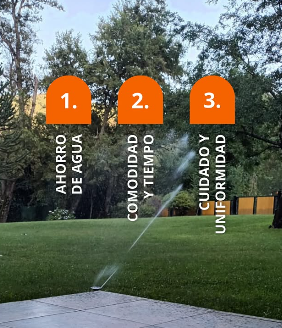

riego
¿Soñás con un jardín verde sin complicaciones? 🌿 Nos encargamos de proyectar e instalar sistemas de riego automatizado que se adapten a tus necesidades y al espacio verde de tu hogar 🏡 Olvidate de la preocupación por el riego manual, nosotros nos encargamos de que tu jardín esté siempre bien cuidado 😉
¡Hacé realidad ese espacio perfecto que siempre quisiste! 🌱
